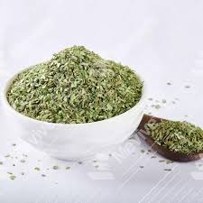

Eat More Herbs and Spices for a Healthy Life
When it comes to achieving a healthy lifestyle, we often think of exercise, staying hydrated, and eating nutritious foods. But one crucial aspect that is sometimes overlooked is the powerful health benefits that herbs and spices offer. These natural flavor enhancers not only make your meals tastier but also pack a punch of essential nutrients and compounds that support overall wellness. In this blog post, we'll explore why incorporating more herbs and spices into your daily diet can help you live a healthier life.
The Power of Herbs and Spices
Herbs and spices have been used for centuries in various cultures, not just to enhance the flavor of food but also for their medicinal properties. They are rich in antioxidants, anti-inflammatory compounds, and essential oils that promote a range of health benefits. Let’s dive into some common herbs and spices and how they can benefit your body.
- 1. Turmeric
Turmeric, a golden-yellow spice, is often found in curry dishes. Its active compound, curcumin, is known for its powerful anti-inflammatory and antioxidant effects. Studies show that curcumin may help reduce the risk of chronic diseases such as heart disease, Alzheimer’s, and even cancer. Adding turmeric to your meals can also aid digestion and support joint health. - 2. Ginger
Ginger is well known for its ability to combat nausea and improve digestion. This spicy root contains gingerol, a bioactive compound that has potent anti-inflammatory and antioxidant effects. Ginger can help reduce muscle soreness, lower blood sugar levels, and even help manage indigestion and bloating. Try adding fresh ginger to tea or stir-fries for a flavorful boost. - 3. Cinnamon
Cinnamon is more than just a sweet spice for desserts—it can also be a key ingredient in managing blood sugar levels. Research suggests that cinnamaldehyde, the active compound in cinnamon, helps improve insulin sensitivity and lower blood sugar spikes after meals. Cinnamon is also packed with antioxidants, which fight oxidative stress and inflammation. - 4. Basil
Basil is a popular herb used in Italian and Mediterranean cuisines. Rich in eugenol and other essential oils, basil has anti-inflammatory and antibacterial properties. It can help reduce oxidative stress, improve digestion, and promote heart health by supporting healthy cholesterol levels. Fresh basil leaves make an excellent addition to salads, sauces, and pasta dishes. - 5. Garlic
Garlic is a powerhouse when it comes to promoting heart health. The sulfur compounds in garlic, particularly allicin, have been shown to reduce blood pressure, lower cholesterol levels, and improve circulation. Garlic also has antimicrobial properties, which can help ward off infections. Whether you eat it raw or cooked, garlic is a simple and effective way to support your immune system. - 6. Oregano
Oregano is often associated with Italian and Greek dishes, but it also boasts several health benefits. It contains carvacrol and thymol, compounds that have antimicrobial and antiviral properties. Oregano is a rich source of antioxidants and has been shown to support gut health by helping to reduce harmful bacteria. - 7. Cayenne Pepper
If you like a little heat in your food, cayenne pepper is an excellent choice. The compound capsaicin in cayenne helps boost metabolism, making it easier for your body to burn fat. Capsaicin also acts as a natural pain reliever, and studies suggest that it may help lower blood pressure and reduce hunger, contributing to weight management.
.jpg)

.jpg)
.jpg)
.jpg)

.jpg)
How to Incorporate More Herbs and Spices into Your Diet
It’s easy to start adding more herbs and spices to your meals. Here are some simple ways:
- Season your dishes: Instead of relying on salt, season your food with herbs and spices like oregano, basil, and rosemary. This will not only enhance the flavor but also provide health benefits.
- Make herbal teas: Ginger, cinnamon, and turmeric can be steeped in hot water to make delicious and health-boosting teas.
- Add to smoothies: A pinch of cinnamon or turmeric can be added to your morning smoothie for a nutrient boost.
- Homemade salad dressings: Mix olive oil with fresh herbs like parsley, basil, and oregano for a healthy and flavorful salad dressing.
- Spice up your soups and stews: Adding turmeric, cayenne pepper, or cumin to soups and stews is a great way to get more nutrients without overwhelming the flavor.
Conclusion
Incorporating more herbs and spices into your diet is an easy and delicious way to boost your health. Not only do these natural ingredients enhance the taste of your meals, but they also provide numerous health benefits, from reducing inflammation to supporting heart health. So the next time you cook, reach for those herbs and spices to make your meal not just flavorful, but also nutritious!
By making small changes in your cooking habits, you can transform your meals into powerful tools for health and wellness. Remember, a little sprinkle of spice can go a long way in supporting a healthy, vibrant life.